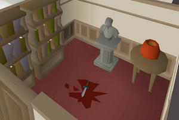

Murder Mystery

Description
Lord Sinclair has been found dead in his mansion! Unfortunately, the local authorities are having some trouble figuring out who is the guilty party. Maybe the unbiased eye of a passing adventurer will be of help.
Murder Mystery is one of the most unique quests in RuneScape, because the outcome of the quest is random for each player, so there is a reasonable amount of detective work you have to do on your own to determine the murderer. However, there are plenty of clues to be found as to who the culprit is.
Required Items
- Pot
- At least 16 free inventory spaces
Steps
Starting out
Begin the quest by speaking to the guard near the entrance gate of Sinclair Mansion. He will tell you that Lord Sinclair has been murdered and the authorities are baffled as they have no clues as to who did it.
Investigation
- Enter the house and search the murder scene, which is located in the room on the east side of the 1st floor. There are three things you must do in this room.
- Pick up the pungent pot on a table. Upon examining it, it has a sickly odour and it appears that Lord Sinclair was drinking from this before he died.
- Collect the criminal's dagger from the floor. Upon examining it, the knife does not appear sturdy enough to have killed Lord Sinclair.
- Investigate the smashed window. On closer inspection, it appears some thread seems to have been caught on a loose nail on the window. Take the criminal's thread.
- Go around to the various bedrooms belonging to the suspects to find six silver items, all contained within barrels in each room. There are two rooms on the 1st floor and four rooms upstairs. Look for:
- Anna's silver necklace
- Bob's silver cup
- Carol's silver bottle
- David's silver book
- Elizabeth's silver needle
- Frank's silver pot
Collecting evidence
Now, it's time to gather your pieces of evidence.
- Go to the main entrance of the mansion, and go north-east until you reach the guard dog enclosure, situated directly next to the smashed window. Investigate the sturdy wooden gate.
As you approach the gate, the guard dog starts barking loudly at you. There is no way an intruder could have committed the murder. It must have been someone the dog knew to get past it quietly.
- Next, go to the gardener's shed (the small house on the ground level, west side of the outside of the mansion) and investigate the sacks to find flypaper. Take seven of these.
- Go to the kitchen inside the mansion, and fill your empty pot with flour.
- Use the pot of flour on the criminal's dagger; then, use the dusted dagger on a piece of flypaper to get an unknown print.
- Next, dust each of the silver items you obtained earlier with more flour, and use a new corresponding flypaper to lift fingerprints from each item; then, compare them to the print of the criminal's dagger you found at the scene.
Once you have a match, all of the other silver items are no longer needed except for your proof. However, you'll need more than just for a conviction, though.
- Go to the entrance of the mansion, and talk to Gossip, and ask him who he thinks is responsible. Gossip suspects it was someone closer to home, especially since he heard that the poison salesman in Seer's Village made a big sale to one of the family members the other day.
- Following the road, head south from the main entrance of Sinclair Mansion until you reach a crossroad and go west into Seer's Village.
- Enter the pub located at far west of Seer's Village and speak to the poison salesman.
- Asking the poison salesman about the murder at Sinclair Mansion, he reveals that he sold his patented multi purpose poison to each of the Sinclair family members.
- If you show the poison salesman your pungent pot, he will also confirm that it smells exactly like his patented multi purpose poison.
- Return to the mansion and ask the person who had the fingerprints on the criminal's dagger to find out what the poison was used on. Search the item they mentioned, detailed here:
- Anna - Compost heap
- Bob - Beehive in cow pen
- Carol - Sinclair mansion drain, west of the front door
- David - Spider's nest, upstairs between the two rooms with three beds each in them
- Elizabeth - The fountain
- Frank - Family crest, east of the front door
Upon searching the item they mentioned, you'll find that the subject was lying and didn't use their poison on what they had said they did.
Finishing up
Go back and talk to the guard and tell them you know who did it. Show the guard the matching fingerprints, tell him about the poison, and show him the thread from the windowsill, since its colour will be a match to an article of the culprit's clothing. Case closed!
Quest complete!
Quest List